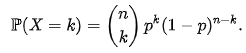
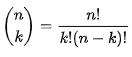
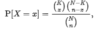
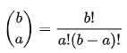

Distribución binomial
Es una distribución de probabilidad discreta descrita por dos parámetros: n el número de experimentos realizados, y p la probabilidad de éxito. Para cada experimento llamado ensayo Bernoulli, utilizamos una variable aleatoria que toma el valor 1 cuando se consigue un éxito y el valor 0 en caso contrario. La variable aleatoria, suma de todas estas variables aleatorias, cuenta el número de éxitos y sigue una distribución binomial.
La ley binomial se utiliza en diversos campos de estudio, especialmente a través de pruebas estadísticas que permiten interpretar datos y tomar decisiones en situaciones que dependen del azar. Debido a su sencilla definición, es una de las leyes de probabilidad que se estudian en los cursos introductorios de teoría de la probabilidad.
Se utiliza para predecir la probabilidad de obtener un número específico de éxitos en un número fijo de intentos, cada uno con dos posibles resultados (éxito o fracaso) y donde cada intento es independiente de los demás.
Puntos clave
- Solo se consideran dos posibles resultados para cada prueba: éxito o fracaso.
- Cada prueba o experimento se realiza de manera independiente, sin influir en los resultados de los demás.
- Nos ayuda a calcular la probabilidad de obtener un número específico de éxitos en un conjunto de pruebas.
Dicho de una manera mucho más simple, la distribución binomial es una forma de calcular cómo se distribuyen las probabilidades en situaciones donde solo hay dos posibles resultados: un éxito o un fracaso. Esta se aplica cuando realizamos una serie de pruebas, todas independientes entre sí, y queremos saber cuántas veces ocurrirá un evento específico, como obtener cara al lanzar una moneda varias veces.
Objetivo - Distribución binomial
La distribución binomial se utiliza con frecuencia para modelizar el número de aciertos en una muestra de tamaño n extraída con reemplazo de una población de tamaño N. Si el muestreo se realiza sin reemplazo, las extracciones no son independientes, por lo que la distribución resultante es una distribución hipergeométrica, no una distribución binomial. Sin embargo, para N mucho mayores que n, la distribución binomial sigue siendo una buena aproximación, y se utiliza ampliamente.
Una distribución binomial también se puede utilizar para modelar situaciones simples de acertar o fallar, un juego de lanzar una moneda, por ejemplo.
Uso - Distribución binomial
Usamos el número de éxitos en una secuencia de 𝑛 ensayos de Bernoulli independientes entre sí con una probabilidad fija 𝑝 de ocurrencia de éxito entre los ensayos. Un experimento de Bernoulli se caracteriza por ser dicotómico, esto es, solo dos resultados son posibles, a uno de estos se le denomina “éxito” y tiene una probabilidad de ocurrencia 𝑝 y al otro se le denomina “fracaso” y tiene una probabilidad 𝑞=1−𝑝.
Es posible entonces obtener la probabilidad de k éxitos en una repetición de n experimentos:
En esta fórmula interviene el coeficiente binomial del que se deriva el nombre de la ley.
Limitaciones - Distribución binomial
La distribución binomial es útil para resolver problemas donde se cumplen las siguientes condiciones. Por ejemplo, puede modelar la probabilidad de que un cierto número de pacientes se recupere después de recibir un tratamiento si se conoce la tasa de éxito del tratamiento.
Condiciones
- El experimento consta de una secuencia de 𝑛 ensayos.
- En cada ensayo hay dos resultados posibles. A uno de ellos se le llama éxito y al otro, fracaso
- La probabilidad de éxito es constante de un ensayo a otro, nunca cambia y se denota por 𝑝 por ello la probabilidad de fracaso será 1−𝑝.
- Los ensayos son independientes, de modo que el resultado de cualquiera de ellos no influye en el resultado de cualquier otro ensayo.
Practica - Fallos de servidores.
En una fabrica de software se tienen 9 servidores conectados las 24 horas, sabiendo que la probabilidad de que alguno falle es de 0.36 cual es la probabilidad de que fallen 4 de los servidores.
Solución
-
1
Verificar que el problema cumpla con cada uno de los requerimientos descritos anteriormente, condiciones.
-
2
Encuentra los datos importantes del problema para sustituir en la formula.
- X = 9 (Total de servidores que pueden fallar)
- n = 9 (Total de ensayos)
- p = 0.36 (Probabilidad de éxito)
- X ~ B(9, 0.36) (Distribución binomial)
- x = {0, 1, 2, 3, 4, 5, 6, 7, 8, 9} (Nos centramos en en numero 4 como lo indica el problema)
-
3
Sustituimos en
\(f(x) = P(X = x) = \binom n x \space p^x \space (1-p)^{n-x}\)
\(f(4) = P(X = 4) = \binom 9 4 \space 0.36^4 \space (1-0.36)^{9-4}\)
Obtenemos el coeficiente binomial
\(\binom n x = \frac{n!}{x!(n-x)!}\)
\(\binom 9 4 = \frac{9!}{4!(9-4)!}\)
\(\binom 9 4 = \frac{9.8.7.6.5.4.3.2.1}{4!(5)!}\)
\(\binom 9 4 = \frac{9˙8˙7˙6˙5˙4˙3˙2˙1}{4˙3˙2˙1˙5˙4˙3˙2˙1}\)
Simplificamos la expresión.
\(\binom 9 4 = \frac{9˙8˙7˙6}{4˙3˙2˙1}\)
Nos queda.
\(\binom 9 4 = \frac{3024}{24}\)
\(\binom 9 4 = 126\)
Sustituimos en la formula de distribución binomial.
\(f(4) = P(X = 4) = 126\space(0.36^4 \space (1-0.36)^{9-4})\)
\(f(4) = P(X = 4) = 126\space(0.00180347)\)
\(f(4) = P(X = 4) = 0.22723722\)
-
4
Se realiza la interpretación del resultado
Hay un \(22.72\%\) de probabilidad de que fallen 4 de los servidores.
Practica - Producto nuevo.
Eres dueño de un restaurante y acabas de agregar un nuevo platillo a tu menú, ahora llegan 20 clientes y quieres saber la probabilidad de que a 18 de ellos les guste dado que la probabilidad de que a uno le guste es de 0.67.
Solución
-
1
Verificar que el problema cumpla con cada uno de los requerimientos descritos anteriormente, condiciones.
-
2
Encuentra los datos importantes del problema para sustituir en la formula.
- X = 20 (Total de servidores que pueden fallar)
- n = 20 (Total de ensayos)
- p = 0.67 (Probabilidad de éxito)
- X ~ B(20, 0.67) (Distribución binomial)
- x = {0, 1, 2, 3, 4, 5, 6, 7, 8, 9, 10, 11, 12, 13, 14, 15, 16, 17, 18, 19, 20} (Nos centramos en en numero 18 como lo indica el problema)
-
3
Sustituimos en
\(f(x) = P(X = x) = \binom n x \space p^x \space (1-p)^{n-x}\)
\(f(18) = P(X = 18) = \binom {20} {18} \space 0.67^{18} \space (1-0.67)^{20-18}\)
Obtenemos el coeficiente binomial
\(\binom n x = \frac{n!}{x!(n-x)!}\)
\(\binom {20} {18} = \frac{20!}{18!(20-18)!}\)
\(\binom {20} {18} = \frac{20˙19˙18˙17˙16˙15˙14˙13˙12˙11˙10˙9˙8˙7˙6˙5˙4˙3˙2˙1}{18!(2)!}\)
\(\binom {20} {18} = \frac{20˙19˙18˙17˙16˙15˙14˙13˙12˙11˙10˙9˙8˙7˙6˙5˙4˙3˙2˙1}{18˙17˙16˙15˙14˙13˙12˙11˙10˙9˙8˙7˙6˙5˙4˙3˙2˙1˙2˙1}\)
Simplificamos la expresión.
\(\binom {20} {18} = \frac{20˙19}{2}\)
Nos queda.
\(\binom {20} {18} = \frac{380}{2}\)
\(\binom {20} {18} = 190\)
Sustituimos en la formula de distribución binomial.
\(f(18) = P(X = 18) = 190\space(0.67^{18} \space (1-0.67)^{20-18})\)
7.40195513\(f(18) = P(X = 18) = 190\space(0.806072913)\)
\(f(18) = P(X = 18) = 0.01531538\)
-
4
Se realiza la interpretación del resultado
Hay un \(1.53\%\) de probabilidad de que a 18 de los clientes les guste el nuevo producto.
Calculadora - Formulario.
Calculadora - Gráfica.
Distribución hipergeométrica
la distribución hipergeométrica es una distribución de probabilidad discreta relacionada con muestreos aleatorios y sin reemplazo. La distribución hipergeométrica es aplicable a muestreos sin reemplazo y la binomial a muestreos con reemplazo. En situaciones en las que el número esperado de repeticiones en el muestreo es presumiblemente bajo, puede aproximarse la primera por la segunda. Esto es así cuando N es grande y el tamaño relativo de la muestra extraída, n/N, es pequeño.
La distribución hipergeométrica es esencial para situaciones en las que el reemplazo no es posible y se trabaja con una población finita. Por ejemplo, determinar la probabilidad de seleccionar defectuosos en una muestra de productos.
Su relevancia se manifiesta en numerosas aplicaciones prácticas, donde la precisión y la adecuación del modelo probabilístico son esenciales para obtener conclusiones válidas y útiles.
Puntos clave
- Solo se consideran dos posibles resultados para cada prueba: éxito o fracaso.
- Cada prueba o experimento puede ser dependiente de otro.
- Muestreo sin reemplazo.
- Población finita.
Objetivo - Distribución hipergeométrica
La clave es que la distribución hipergeométrica permite calcular la probabilidad de obtener un número específico de éxitos en situaciones donde no se puede realizar un muestreo con reemplazo, lo que la hace particularmente adecuada para análisis de poblaciones finitas y selecciones únicas.
La distribución hipergeométrica es útil en situaciones donde se desea conocer la probabilidad de un número específico de éxitos en una muestra tomada sin reemplazo de una población finita.
Uso - Distribución hipergeométrica
Suponga que se tiene una población de 𝑁 elementos de los cuales, 𝐾 pertenecen a la categoría 𝐴 y 𝑁 pertenecen a la categoría 𝐵. La distribución hipergeométrica mide la probabilidad de obtener 𝑥 (0 ≤ 𝑥 ≤ 𝐾) elementos de la categoría 𝐴 en una muestra sin reemplazo de 𝑛 elementos de la población original.
Una variable aleatoria discreta 𝑋 tiene una distribución hipergeométrica con parámetros 𝑁 = 0, 1, …, 𝐾 = 0, 1, …, 𝑁 y 𝑛 = 0, 1, …, 𝑁 y escribimos 𝑋 ∼ HG (𝑁, 𝐾, 𝑛) si su función de probabilidad es
para valores de 𝑥 comprendidos entre max{0, 𝑛 − 𝑁 + 𝐾} y min{𝐾,𝑛}; donde 𝑁 es el tamaño de población, 𝑛 es el tamaño de la muestra extraída, 𝐾 es el número de elementos en la población original que pertenecen a la categoría deseada y 𝑥 es el número de elementos en la muestra que pertenecen a dicha categoría. La notación
hace referencia al coeficiente binomial, es decir, el número de combinaciones posibles al seleccionar 𝑎 elementos de un total 𝑏.
Limitaciones - Distribución hipergeométrica
Para que un problema pueda ser modelado adecuadamente utilizando la distribución hipergeométrica, debe cumplir con las siguientes condiciones:
Condiciones
- Población Finita: Debe haber una población finita y conocida de tamaño 𝑁.
- Dos Categorías: Los elementos de la población deben poder clasificarse en dos categorías mutuamente excluyentes, típicamente llamados "éxitos" y "fracasos". Por ejemplo, objetos defectuosos y no defectuosos, individuos con una característica específica y sin ella, etc.
- Número Fijo de Éxitos: El número total de éxitos (𝐾) en la población debe ser conocido y fijo.
- Muestreo sin Reemplazo: La muestra debe ser tomada sin reemplazo, es decir, una vez que un elemento es seleccionado, no se devuelve a la población antes de la siguiente selección.
- Tamaño de Muestra Fijo: El tamaño de la muestra (𝑛) debe ser fijo y conocido de antemano.
- Selecciones Dependientes: Dado que el muestreo es sin reemplazo, las selecciones son dependientes; la probabilidad de seleccionar un éxito cambia con cada extracción.
Practica - Saco con esferas.
En un saco lleno de 30 esferas, 18 están marcadas con un 1 y el resto con un 0, ¿Cuál es la probabilidad de sacar 7 esferas marcadas con 0 luego de haber sacado 10 esferas al azar?.
Solución
-
1
Verificar que el problema cumpla con cada uno de los requerimientos descritos anteriormente, condiciones.
-
2
Encuentra los datos importantes del problema para sustituir en la formula.
- K = 12 (Total de esferas marcadas con 0)
- N = 30 (Total de esferas que se pueden sacar)
- n = 10 (Total de ensayos)
- x = 7 (Total de éxitos)
-
3
Sustituimos en
\(f(x) = P(X = x) = \frac {\binom K x \space \binom {N-K} {n-x}} {\binom N n}\)
\(f(7) = P(X = 7) = \frac {\binom {12} 7 \space \binom {30-12} {10-7}} {\binom {30} {10}} = \frac {\binom {12} 7 \space \binom {18} {3}} {\binom {30} {10}}\)
Obtenemos los coeficientes
\(\binom n x = \frac{n!}{x!(n-x)!}\)
Primer coeficiente.
\(\binom {12} 7 = \frac{12!}{7!(12-7)!}\)
\(\binom {12} 7 = \frac{12˙11˙10˙9˙8˙7˙6˙5˙4˙3˙2˙1}{12!(5)!}\)
\(\binom {12} 7 = \frac{12˙11˙10˙9˙8˙7˙6˙5˙4˙3˙2˙1}{12˙11˙10˙9˙8˙7˙6˙5˙4˙3˙2˙1˙5˙4˙3˙2˙1}\)
Simplificamos la expresión.
\(\binom {12} 7 = 1˙5˙4˙3˙2˙1\)
Nos queda.
\(\binom {12} 7 = 120\)
Segundo coeficiente.
\(\binom {18} 3 = \frac{18!}{3!(18-3)!}\)
\(\binom {18} 3 = \frac{18˙17˙16˙15˙14˙13˙12˙11˙10˙9˙8˙7˙6˙5˙4˙3˙2˙1}{3!(15)!}\)
\(\binom {18} 3 = \frac{18˙17˙16}{3˙2˙1}\)
Simplificamos la expresión.
\(\binom {18} 3 = \frac{4896} {6}\)
Nos queda.
\(\binom {18} 3 = 816\)
Tercer coeficiente.
\(\binom {30} {10} = \frac{30!}{10!(30-10)!}\)
\(\binom {30} {10} = \frac{30˙29˙28˙27˙26˙25˙24˙23˙22˙21˙20˙19˙18˙17˙16˙15˙14˙13˙12˙11˙10˙9˙8˙7˙6˙5˙4˙3˙2˙1}{10!(20)!}\)
\(\binom {30} {10} = \frac{30˙29˙28˙27˙26˙25˙24˙23˙22˙21}{10˙9˙8˙7˙6˙5˙4˙3˙2˙1}\)
Simplificamos la expresión.
\(\binom {30} {10} = \frac{109027350432000} {3628800}\)
Nos queda.
\(\binom {30} {10} = 30045015\)
Sustituimos en la formula de distribución binomial.
\(f(7) = P(X = 7) = \frac {(120)(816)} {30045015}\)
\(f(7) = P(X = 7) = \frac {97920} {30045015}\)
\(f(7) = P(X = 7) = 0.00325910\)
\(f(7) = P(X = 7) = 0.32%\)
-
4
Se realiza la interpretación del resultado
Hay un \(0.32\%\) de probabilidad de que 7 de las 10 esferas extraídas estén marcadas con un 0.